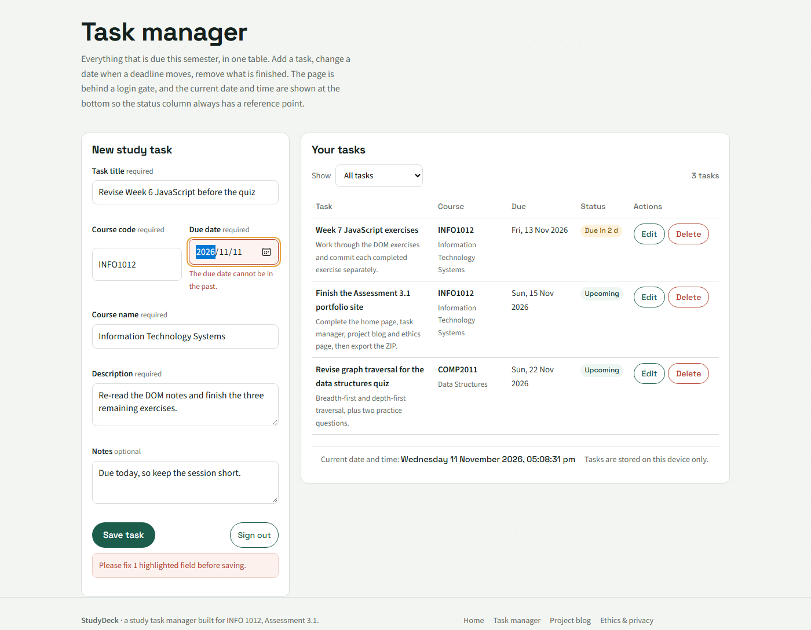
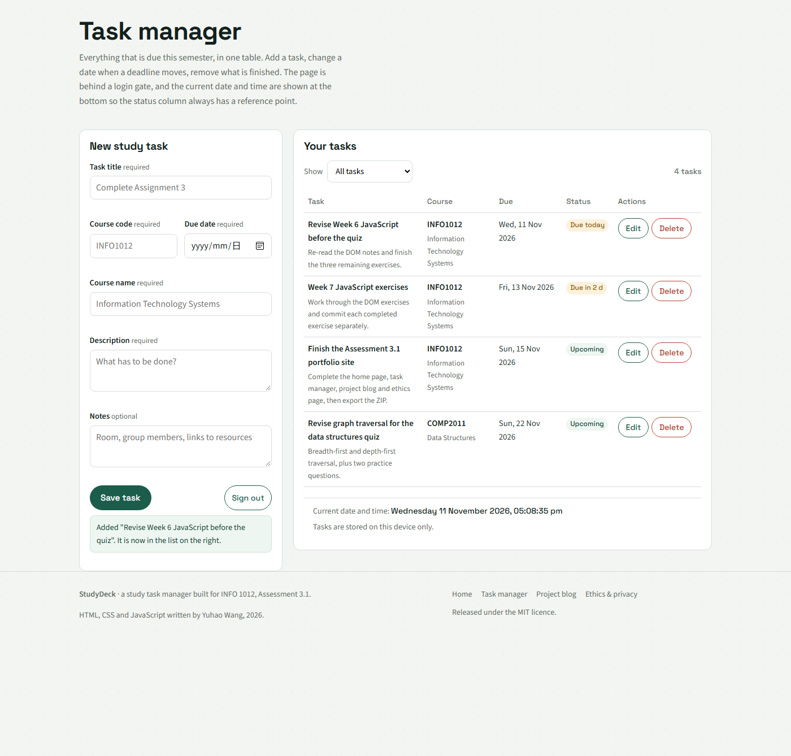

Error 1 · A task due today was rejected as "in the past"
Choosing today's date and pressing save produced the message "The due date cannot be in the past", so a task that was due that day could never be added.

Code that caused it (the first version of readForm in js/tasks.js):
// Buggy version: the date input value ("2026-11-02") is parsed as
// UTC midnight, then compared against the current local time.
var chosen = new Date(data.dueDate); // 2026-11-02T00:00:00Z
var now = new Date(); // 2026-11-02T21:40 local (= 13:40Z)
if (chosen < now) {
fail('dueDate', 'The due date cannot be in the past.');
}
Corrected code:
// Fixed version: parse the ISO string into a local-midnight Date, then
// compare whole days instead of timestamps, so "today" always means today.
function parseISODate(value) {
if (!/^\d{4}-\d{2}-\d{2}$/.test(value)) return null;
var parts = value.split('-').map(Number);
var date = new Date(parts[0], parts[1] - 1, parts[2]); // local midnight
if (date.getFullYear() !== parts[0] ||
date.getMonth() !== parts[1] - 1 ||
date.getDate() !== parts[2]) return null; // rejects 31 Feb
return date;
}
var days = daysFromToday(data.dueDate); // negative = past, 0 = today
if (days < 0) {
fail('dueDate', 'The due date cannot be in the past. Choose today or a later date.');
}
Cause. A date-only value written as
"2026-11-02" is treated by the ECMAScript date parser as
UTC midnight, while new Date() returns the current moment
in local time. In a UTC+8 time zone, UTC midnight on 2 November is
08:00 local, which is earlier than 21:40 the same evening, so today's
date was classified as past. The comparison was also comparing two
things that mean different things: a calendar day and a point in time.
How it was resolved. The date is now parsed into a
Date built from local year, month and day, the current day
is reduced to local midnight in the same way, and the two are compared
as a whole number of days. Parsing this way also rejects impossible
dates such as 31 February, which the old check silently rolled forward
to March. The round-trip test was added after testing the fix against
2026-02-31.
Resources used. MDN Web Docs on
Date and date-only string parsing (the UTC interpretation
of "YYYY-MM-DD"); MDN on
Date.prototype.getTime() for comparing dates numerically;
the Week 6 practical notes on validating dates in JavaScript.